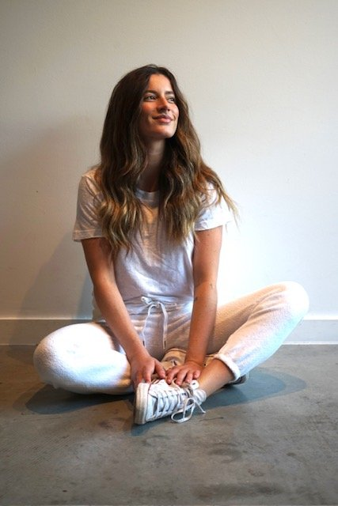

Story · Spain
Spain: A Wedding and an Adventure
A friend's wedding outside Madrid, free tapas with every drink, a Keinemusik night at La Caja Mágica, then a villa in Ibiza and a ferry to Formentera.

Chesney LishMadrid, Spain · 27 September 2024 · 4 min read
Arriving in Madrid, Spain felt like pure bliss. The air was fresh, and the sunny day was filled with light as we prepared to explore the city's hidden gems before our friend's wedding on Sunday.
We stayed at Hotel De Toledo, centrally located and perfect for walking around and discovering the area. Our first stop was for patatas bravas at a local spot where, with each drink, you get a free tapa, no questions asked, no chairs, just standing around, drinking, and chatting with friends. Perfecto!
We wandered through alleyways and quaint shops before a quick gelato stop on our way to Siroco, a techno club on the northwest side of town, where my boyfriend had a show. The club has two rooms with different vibes, so if you're looking for something unique in Madrid's nightlife, it's a must-visit.
After a late night, we spent the next day hopping from café to restaurant to bar (Sahurao Madrid and Ok Hostel are great spots). We met a wonderful woman from the Balearic Islands, who mentioned a Keinemusik show at La Caja Mágica that evening. It was perfect, since we're big fans. We joined her and danced the night away.
The sunset that evening was a watercolor painting of fiery hues, setting the stage for an unforgettable night of dancing, singing, and enjoying great company, both old and new. In Spain, everyone is friendly, and life feels more relaxed. All you need is a drink, tapas, good music, and great company.
Madrid's architecture also takes you back in time, with its rich history still very much alive in the city streets.
The wedding
Sunday was the big day, time for the wedding. We took a bus to Fábricas De Harinas, a hacienda just outside the city, straight out of a fairytale. The Indian-Spanish ceremony was beautiful, with translations in Hindi, Spanish, and English, as the bride grew up in Canada. The night was filled with laughter, tears, sparkling wine, a delicious courtyard dinner, dancing, and lots of music. We fell asleep with warm, fuzzy feelings from a joyous celebration of love.
Ibiza
The next day, we headed to Spain's famous island, Ibiza. Having been there before with a local friend, this time was different: we were staying in a villa with the wedding party. The villa, located on the quieter northeast side of the island, offered a peaceful retreat, though still close enough to join in the party atmosphere when desired.
Ibiza is special because you can strike a balance between lively nightlife and peaceful relaxation. The island's beauty is palpable, and the energy is ever-present.
Our first evening was spent at Playa Soleil for the All Day I Dream party, enjoying amazing sushi and Greek salad. The second night, we dined at S'Illa Des Bosc with the wedding party and tried Ibiza's famous black rice paella. With the restaurant perched on cliffs and the sunset painting the sky, it was a perfect evening.
The following night, we partied with Fisher at Hï Ibiza. If you're going to one of these big clubs, I'd recommend the VIP option, especially if you don't arrive early. The crowds can be intense, and visibility can be an issue! But the energy was high, and we danced until morning.
Formentera
The next day, we took a ferry to Formentera, a stunning island just 40 minutes from Ibiza Town. The island narrows during high tide, creating a thin strip of beach with ocean views on both sides. It's a breathtaking sight. The ferry drops you off at the dock, where a bus takes you to the beach. The last bus returns to the ferry around 6 p.m.
Spain is absolutely stunning, with friendly people, incredible food, laid-back vibes, and countless beautiful places to explore.
Quick answers
How do you get from Ibiza to Formentera?
Ferry from Ibiza Town, about 40 minutes. A bus runs from the dock to the beach, and the last bus back to the ferry leaves around 6 p.m.
Should you book VIP at the big Ibiza clubs?
If you are not arriving early, yes. The crowds can be intense and visibility is an issue.
Xx, Chesney
What's your favorite part of Spain?
Replies go to the editor, not to a comment thread. The good ones end up in the Sunday letter, under your pen name.
Tell the editor